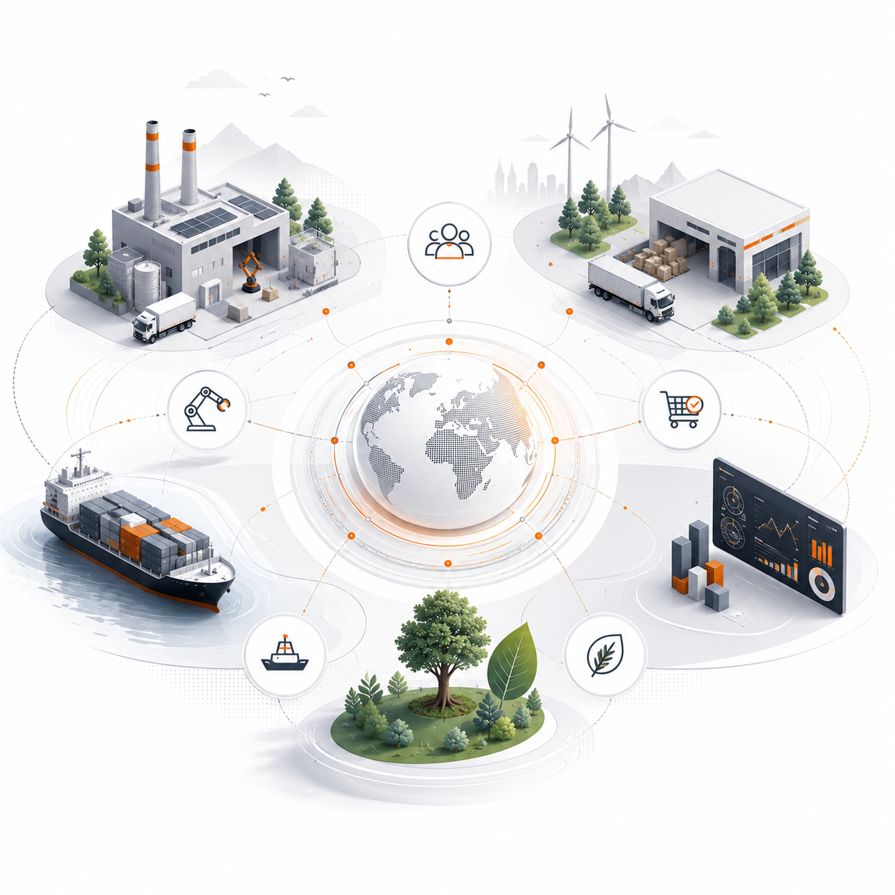

Supplier ecosystem access
Identify and engage suppliers with the category fit, capacity, geography and reliability required by industrial buyers.
Industrial Supply Network
Reinforge connects manufacturers with qualified suppliers, logistics partners and circular feedstock ecosystems through a unified procurement and supply orchestration model.

What Reinforge is
Reinforge helps industrial buyers source critical materials through a trusted supplier ecosystem while coordinating supplier qualification, procurement workflows, logistics movement, quality documentation and supply continuity.
The result is a more resilient procurement capability: broader access, clearer visibility, stronger execution and a practical path toward circular industrial supply chains.
Network architecture
Reinforge is designed around the participants and workflows that determine whether industrial procurement succeeds at scale.
Procurement orchestration
Reinforge brings network access, category intelligence and operating discipline into one coordinated procurement motion.
Identify and engage suppliers with the category fit, capacity, geography and reliability required by industrial buyers.
Support procurement of virgin and recycled inputs across metals, polymers, chemicals and manufacturing material categories.
Coordinate the practical diligence needed to evaluate capabilities, documentation, operating fit and supply readiness.
Manage RFQs, supplier communication, negotiation support and follow-through across fragmented sourcing workflows.
Align material movement with logistics partners, buyer constraints and supplier operating realities.
Build alternate supplier pathways and continuity options that reduce dependency, disruption and procurement blind spots.
Circular supply chains
Reinforge treats sustainability as a procurement capability: access to recycled feedstocks, traceability-ready documentation and supplier ecosystems that improve both resilience and material optionality.
Why Reinforge
Limited to individual relationships and narrow category coverage.
Often create discovery without the qualification, coordination and execution buyers need.
Move goods, but do not solve supplier access, material fit or procurement resilience.
Connects supplier ecosystems, procurement workflows, logistics partners and circular supply capability into one industrial network model.
Industrial sectors
Scrap, billets, sponge iron, alloys, finished metals and circular metal flows.
Industrial chemicals, specialty chemicals, process materials and qualified supplier pathways.
Resins, compounds, recycled feedstocks and polymer supply network development.
Raw materials, components and operating inputs for production environments.
Our thinking
Supply resilience
Circular supply
Network intelligence
Enterprise conversation
Bring Reinforge into the sourcing categories, supplier constraints or circular feedstock pathways your team needs to strengthen.
Start the conversation